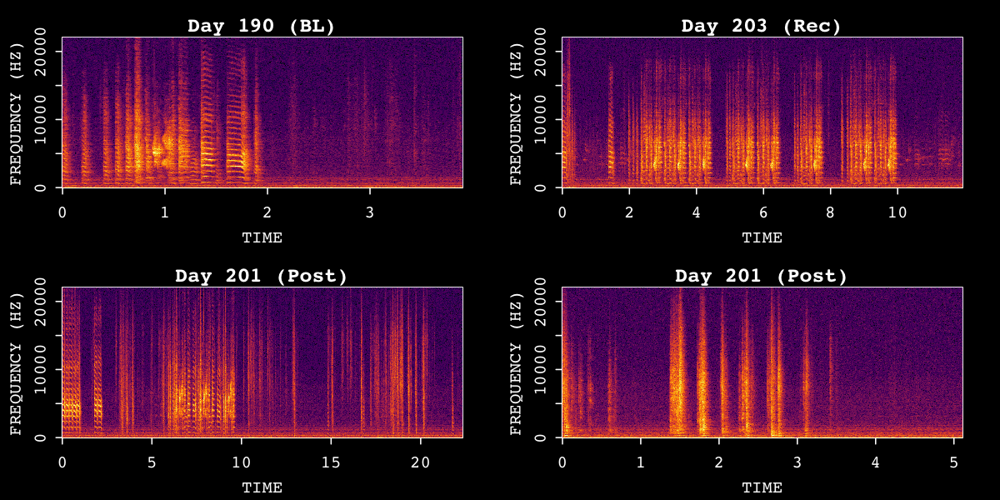
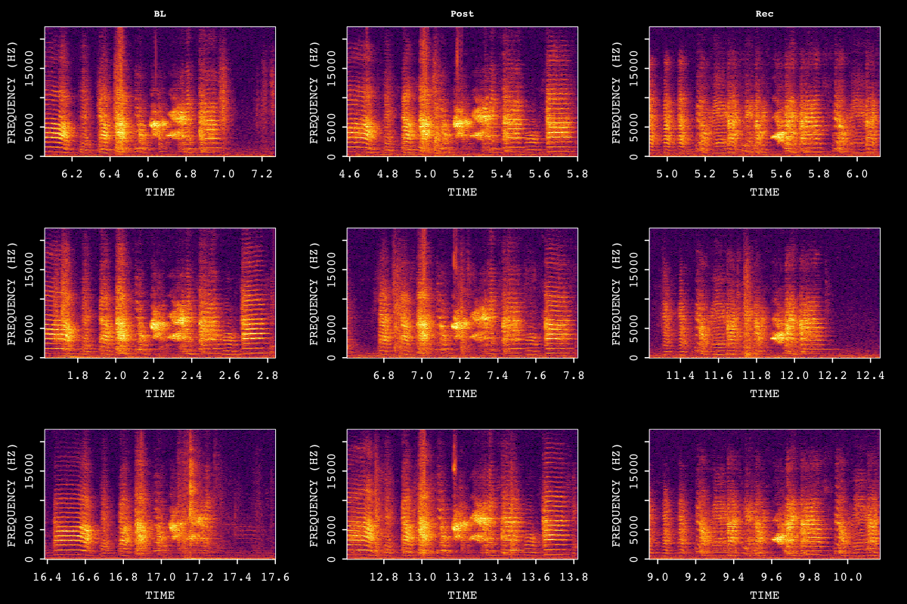
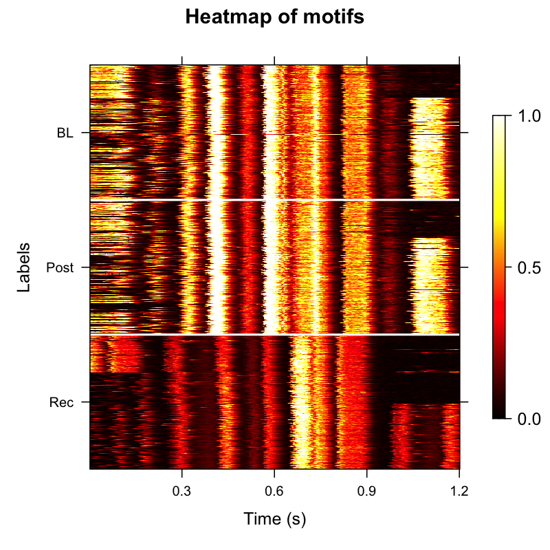
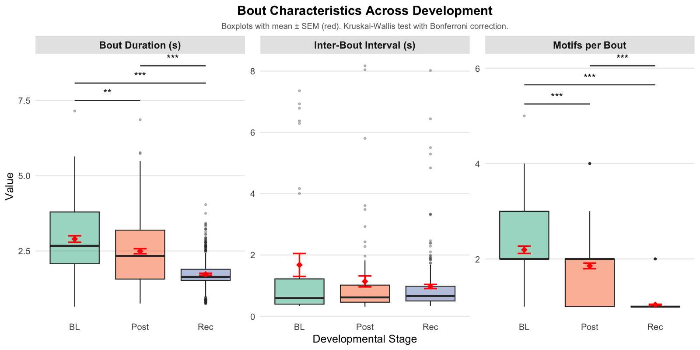

ASAP (Automated Sound Analysis Pipeline) provides an integrated suite of
tools for processing, analysing, and visualising avian
vocalizations—from single audio files to large longitudinal
datasets.
Choose a tutorial below to get started.
Single WAV File Analysis

<div class="card-title">Visualising Song Recordings</div>
<div class="card-desc">
Load a single WAV file, create a SAP object, and plot spectrograms to
explore the raw audio signal.
</div>
<span class="card-tag">Beginner · ~10 min</span>
<div class="card-title">Motif Detection (Single File)</div>
<div class="card-desc">
Build a template, run cross-correlation–based detection, and extract
motif segments from a single recording.
</div>
<span class="card-tag">Beginner · ~15 min</span>Longitudinal Recording Analysis with SAP Object
<div class="card-title">Construct a SAP Object</div>
<div class="card-desc">
Organise multi-day recording directories into a typed SAP object for
reproducible longitudinal analysis.
</div>
<span class="card-tag">Intermediate · ~10 min</span>
<div class="card-title">Longitudinal Motif Detection</div>
<div class="card-desc">
Detect, align, and cluster motifs across developmental time points.
Visualise changes in acoustic structure with heatmaps and UMAP embeddings.
</div>
<span class="card-tag">Intermediate · ~25 min</span>
<div class="card-title">Longitudinal Bout Detection</div>
<div class="card-desc">
Detect song bouts across recordings, summarise motif-bout relationships,
and track developmental changes in bout duration and motif density.
</div>
<span class="card-tag">Intermediate · ~20 min</span>